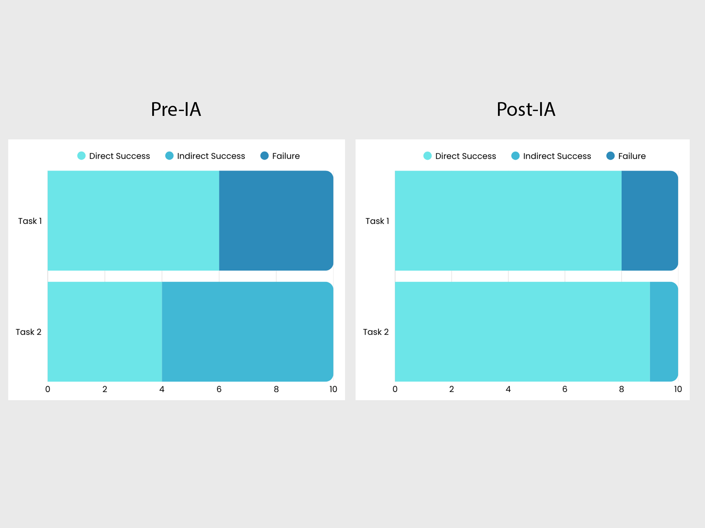

Community House Winnetka — Website Redesign
Mobile-first information architecture and donation flow redesign to improve findability and conversions for a local nonprofit.
Introduction
I co-led a mobile-first redesign of Community House Winnetka’s website, a local nonprofit offering classes, events, and community programs. Over 12 weeks I led IA research and testing, and I was the sole UX researcher/designer for the donation redesign and prototype.
The project goal: make it easy for community members to find programs and make donations on mobile, where most visitors access the site.
You can view of the redesigned Donation flow prototype here → Figma Hi-fi Prototype.
Problem
The existing site created friction for two high-value tasks: finding programs and making donations. Key issues included:
- Cluttered navigation: overlapping categories and ambiguous labels (e.g., “Program Info” vs “Performing Arts”).
- Hidden donate action: “Support Us” wording and deep links made donations hard to find.
- Lengthy donation flow: four steps and unclear microcopy increased abandonment.
- Accessibility gaps: small tap targets, contrast issues, and unlabeled inputs reduced confidence for some users.
My role
Title: UX Designer (mobile-first)
- Initiated the project and facilitated stakeholder kickoff.
- Led IA research (card sorting, tree testing) and heuristic task analysis.
- Sole researcher & designer for the donation redesign: wireframes → mobile hi-fi prototype → test.
- Worked with teammates on sitewide prototypes and documentation for handoff to the developer.
Research & discovery
We took a mixed-methods approach focused on the two primary tasks (find programs, donate):
- User interviews (n=8): Community members reported difficulty finding programs and donation links.
- Heuristic evaluation: Catalogued major usability and accessibility issues such as unclear labels and weak CTAs.
- Card sorting (n=10): Produced a clearer four-category IA (Programs, Events, About Us, Contact Us).
- Tree testing (n=10): Validated new IA; donation page findability improved from ~40% to 100%.
Key insight: Users expected “Donate” to be visible in the header and wanted fewer steps to complete their gift.
Design process
We conducted a full IA analysis, generated options through card sorting, and validated them with tree testing. After introducing the new IA, we repeated tree testing and heuristic task analysis to confirm improvements.
Heuristic task analysis (post-IA)
We tested two critical user tasks under the new IA:
- Task 1 — Sign up a child for a theater class
Success path: Programs → Kids & Teens → Theater Classes — simplified to two taps with clearer labels. - Task 2 — Make a donation
Success path: Utility menu → Donate — direct access with no detours or guesswork.
Result: Both tasks were completed successfully with fewer steps and less confusion, confirming the new IA improved usability.
Wireframes & mobile-first prototyping
- Wireframing: Sketched layouts and tested variations for homepage and donation flow.
- High-fidelity prototyping: Designed polished mobile screens in Figma, aligning with CHW’s brand.
- Microcopy: Added supportive text such as “Your gift is tax-deductible” and a clear “Complete Donation” button.
Solution
The final design included:
- Clear navigation: four main menu items and a prominent “Donate Now” button in the header.
- Streamlined donation flow: reduced from four steps to two, with preset amounts, recurring option, and inline validation.
- Accessibility improvements: high-contrast buttons, descriptive alt text, and labeled form fields.
- Responsive layout: optimized for desktop and mobile, with a mobile-first approach.
Results & feedback
- Task success: 100% of users completed the donation task; 90% successfully located a program.
- Efficiency: Programs became reachable in two taps; donations in one tap via the sticky menu.
- Engagement: Donation findability improved from ~40% to 100% in tree testing.
- User feedback: Participants described the new site as “clearer” and “much easier to navigate.”
Reflection & next steps
- Mobile-first design forced clarity in IA and simplified key flows.
- Small wording and placement changes (CTA copy, sticky menu) drove measurable improvements in confidence and findability.
- Accessibility and inclusivity must remain a baseline, not an afterthought.
Next steps: A/B test the donate button copy, collect analytics to validate conversion impact, and expand usability testing to include users with accessibility needs.